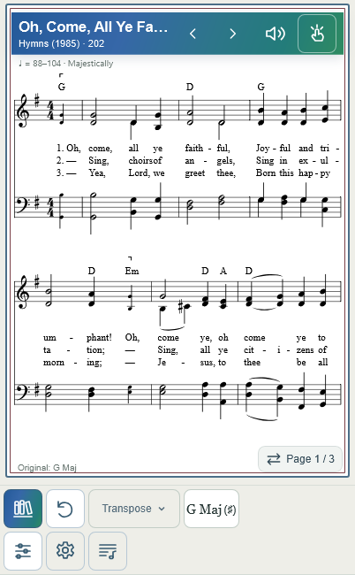
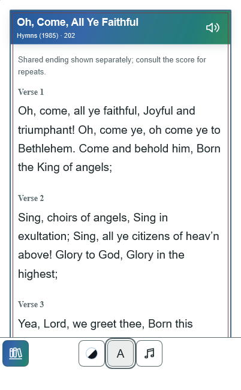

Baseline cdb851c, including completed Hymn 201 cleanup and Hymn 223 fix 2427916. This change concerns shared footer geometry only. Physical Safari/PWA acceptance remains pending.
In the reduced visual-viewport simulation, fixed bottom:0 anchored the footer to the 874px layout viewport even though the visible bottom was 650px. Existing safe-area padding protected the home-indicator region inside the footer but could not compensate for the separate 224px browser obstruction. Original, Transpose, Melody and Lyrics all reproduced the same displacement. This demonstrates the failure mechanism; physical browser-chrome behavior still requires confirmation on the user's iPhone.
| 402px portrait case | Before | After |
|---|---|---|
| innerHeight / clientHeight | 874 / 874px | 874 / 874px |
| Visual height / offsetTop / scale | 650px / 0 / 1 | 650px / 0 / 1 |
| Score footer, safe-area 0 | top 772, bottom 874, height 102px | top 548, bottom 650, height 102px |
| Bottom row, safe-area 0 | bottom 869px | bottom 645px |
| Score footer, injected safe-area 34px | top 738, bottom 874, height 136px | top 514, bottom 650, height 136px |
| Bottom row, injected safe-area 34px | bottom 835px | bottom 611px |
| Lyrics footer, injected safe-area 34px | bottom 874px | bottom 650px |
WebKit reports a real emulated safe-area inset of zero. The additional 34px is a test injection, not a hard-coded production offset or a claimed physical-device measurement.
footer-viewport.js compares the visible bottom (visualViewport.offsetTop + height) with the unshifted fixed-footer anchor. A shared CSS custom property moves both Score and Lyrics footers above any measured obstruction. It also handles a browser already positioning fixed elements at the visible edge, avoiding a second lift.--playing-bar-height reserves the toolbar plus obscured region, excluding safe padding, which existing consumers add once. In the 402×874 / visible650 case it is 326px: 102px toolbar + 224px obstruction.node tests/footer-viewport.mjs: 71 geometry snapshots. 390×844, 402×874, 430×932; reduced650px and offsetTop20px states; safe0 and injected34px; landscape844×390, 874×402, 932×430 and reduced landscape. All visible controls meet 44px targets, stay within the visible edge, remain hit-testable, and do not overflow horizontally.FOOTER_WIDTH=402 node tests/footer-viewport.mjs: 22 follow-up snapshots passed, including a fixed-footer anchor beyond innerHeight. Measured anchors are respected rather than clamped to an assumed layout bottom. Full precision follow-up evidence is included in the JSON.TRANSITION_WIDTH=402 node tests/phone-view-transition.mjs: existing Hymn 223 original/alternate-key mode transitions, source-break equivalence, transient height recovery, pinch exclusion and Continuous smoke passed.node tests/system-pagination.mjs: focused complete-system packing tests passed. JavaScript syntax checks and git diff --check passed. One known WebKit ResizeObserver scheduling notification also occurs on baseline; no other page errors or sustained render loops.Production: footer-viewport.js, navigation.js, virtual-pages.js, app.js, styles.css, layout-debug.js, sw.js (v214, helper included in app-shell assets). Test: tests/footer-viewport.mjs. Evidence: this report, JSON measurements and two screenshots. Source MXL/PDF, generated harmony, Hymn 201 filtering, Melody extraction, playback/metronome and gesture code are unchanged.
Images show only the simulated visible 650px region, excluding the obstructed area below it.


Full precision JSON, including individual controls and baseline measurements.
| Case | Layout viewport | Visual height + top | Safe | Applied offset | Footer top | Footer bottom | Lowest control | Score budget | Structured pages |
|---|---|---|---|---|---|---|---|---|---|
| 390-full-pdf | 390 × 844 | 844 + 0 | 0 | 0 | 742 | 844 | 839 | 648 | 0 |
| 390-full-auto | 390 × 844 | 844 + 0 | 0 | 0 | 742 | 844 | 839 | 631 | 6 |
| 390-full-large | 390 × 844 | 844 + 0 | 0 | 0 | 742 | 844 | 839 | 631 | 2 |
| 390-full-pdf | 390 × 844 | 844 + 0 | 0 | 0 | 742 | 844 | 839 | 648 | 0 |
| 390-reduced-auto | 390 × 844 | 650 + 0 | 0 | 194 | 548 | 650 | 645 | 437 | 8 |
| 390-reduced-large | 390 × 844 | 650 + 0 | 0 | 194 | 548 | 650 | 645 | 437 | 2 |
| 390-reduced-auto | 390 × 844 | 650 + 0 | 0 | 194 | 548 | 650 | 645 | 437 | 8 |
| 390-reduced-pdf | 390 × 844 | 650 + 0 | 0 | 194 | 548 | 650 | 645 | 454 | 0 |
| 390-reduced-reference | 390 × 844 | 650 + 0 | 0 | 194 | 548 | 650 | 645 | 437 | 8 |
| 390-restored-full | 390 × 844 | 844 + 0 | 0 | 0 | 742 | 844 | 839 | 631 | 6 |
| 390-reduced-again | 390 × 844 | 650 + 0 | 0 | 194 | 548 | 650 | 645 | 437 | 8 |
| 390-reduced-safe34 | 390 × 844 | 650 + 0 | 34 | 194 | 514 | 650 | 611 | 403 | 8 |
| 390-lyrics | 390 × 844 | 650 + 0 | 34 | 194 | 562 | 650 | 611 | — | — |
| 390-lyrics-return | 390 × 844 | 650 + 0 | 34 | 194 | 514 | 650 | 611 | 403 | 8 |
| 390-landscape | 844 × 390 | 390 + 0 | 34 | 0 | 302 | 390 | 351 | 187.7 | 4 |
| 390-landscape-reduced | 844 × 390 | 340 + 0 | 34 | 50 | 252 | 340 | 301 | 137.7 | 4 |
| 402-full-pdf | 402 × 874 | 874 + 0 | 0 | 0 | 772 | 874 | 869 | 678 | 0 |
| 402-full-auto | 402 × 874 | 874 + 0 | 0 | 0 | 772 | 874 | 869 | 661 | 2 |
| 402-full-large | 402 × 874 | 874 + 0 | 0 | 0 | 772 | 874 | 869 | 661 | 2 |
| 402-full-pdf | 402 × 874 | 874 + 0 | 0 | 0 | 772 | 874 | 869 | 678 | 0 |
| 402-reduced-auto | 402 × 874 | 650 + 0 | 0 | 224 | 548 | 650 | 645 | 437 | 3 |
| 402-reduced-large | 402 × 874 | 650 + 0 | 0 | 224 | 548 | 650 | 645 | 437 | 2 |
| 402-reduced-auto | 402 × 874 | 650 + 0 | 0 | 224 | 548 | 650 | 645 | 437 | 3 |
| 402-reduced-pdf | 402 × 874 | 650 + 0 | 0 | 224 | 548 | 650 | 645 | 454 | 0 |
| 402-reduced-reference | 402 × 874 | 650 + 0 | 0 | 224 | 548 | 650 | 645 | 437 | 3 |
| 402-restored-full | 402 × 874 | 874 + 0 | 0 | 0 | 772 | 874 | 869 | 661 | 2 |
| 402-reduced-again | 402 × 874 | 650 + 0 | 0 | 224 | 548 | 650 | 645 | 437 | 3 |
| 402-reduced-safe34 | 402 × 874 | 650 + 0 | 34 | 224 | 514 | 650 | 611 | 403 | 3 |
| 402-lyrics | 402 × 874 | 650 + 0 | 34 | 224 | 562 | 650 | 611 | — | — |
| 402-lyrics-return | 402 × 874 | 650 + 0 | 34 | 224 | 514 | 650 | 611 | 403 | 3 |
| 402-offset20 | 402 × 874 | 630 + 20 | 34 | 224 | 514 | 650 | 611 | 403 | 3 |
| 402-continuous | 402 × 874 | 630 + 20 | 34 | 224 | 514 | 650 | 611 | 403 | 3 |
| 402-continuous-scrolled | 402 × 874 | 630 + 20 | 34 | 224 | 514 | 650 | 611 | 403 | 3 |
| 402-native-anchor | 402 × 874 | 650 + 0 | 34 | 0 | 514 | 650 | 611 | 403 | 3 |
| 402-full-height-safe34 | 402 × 874 | 874 + 0 | 34 | 0 | 738 | 874 | 835 | 627 | 2 |
| 402-landscape | 874 × 402 | 402 + 0 | 34 | 0 | 314 | 402 | 363 | 199.7 | 4 |
| 402-landscape-reduced | 874 × 402 | 352 + 0 | 34 | 50 | 264 | 352 | 313 | 149.7 | 4 |
| 430-full-pdf | 430 × 932 | 932 + 0 | 0 | 0 | 830 | 932 | 927 | 736 | 0 |
| 430-full-auto | 430 × 932 | 932 + 0 | 0 | 0 | 830 | 932 | 927 | 719 | 2 |
| 430-full-large | 430 × 932 | 932 + 0 | 0 | 0 | 830 | 932 | 927 | 719 | 1 |
| 430-full-pdf | 430 × 932 | 932 + 0 | 0 | 0 | 830 | 932 | 927 | 736 | 0 |
| 430-reduced-auto | 430 × 932 | 650 + 0 | 0 | 282 | 548 | 650 | 645 | 437 | 3 |
| 430-reduced-large | 430 × 932 | 650 + 0 | 0 | 282 | 548 | 650 | 645 | 437 | 2 |
| 430-reduced-auto | 430 × 932 | 650 + 0 | 0 | 282 | 548 | 650 | 645 | 437 | 3 |
| 430-reduced-pdf | 430 × 932 | 650 + 0 | 0 | 282 | 548 | 650 | 645 | 454 | 0 |
| 430-reduced-reference | 430 × 932 | 650 + 0 | 0 | 282 | 548 | 650 | 645 | 437 | 3 |
| 430-restored-full | 430 × 932 | 932 + 0 | 0 | 0 | 830 | 932 | 927 | 719 | 2 |
| 430-reduced-again | 430 × 932 | 650 + 0 | 0 | 282 | 548 | 650 | 645 | 437 | 3 |
| 430-reduced-safe34 | 430 × 932 | 650 + 0 | 34 | 282 | 514 | 650 | 611 | 403 | 3 |
| 430-lyrics | 430 × 932 | 650 + 0 | 34 | 282 | 562 | 650 | 611 | — | — |
| 430-lyrics-return | 430 × 932 | 650 + 0 | 34 | 282 | 514 | 650 | 611 | 403 | 3 |
| 430-landscape | 932 × 430 | 430 + 0 | 34 | 0 | 342 | 430 | 391 | 227.7 | 3 |
| 430-landscape-reduced | 932 × 430 | 380 + 0 | 34 | 50 | 292 | 380 | 341 | 177.7 | 3 |
| 820-baseline-pdf | 820 × 1180 | 1180 + 0 | 0 | None | 1126 | 1180 | 1175 | 1030 | 0 |
| 820-baseline-auto | 820 × 1180 | 1180 + 0 | 0 | None | 1126 | 1180 | 1175 | 1011.7 | 1 |
| 820-baseline-large | 820 × 1180 | 1180 + 0 | 0 | None | 1126 | 1180 | 1175 | 1011.7 | 1 |
| 820-current-pdf | 820 × 1180 | 1180 + 0 | 0 | 0 | 1126 | 1180 | 1175 | 1030 | 0 |
| 820-current-auto | 820 × 1180 | 1180 + 0 | 0 | 0 | 1126 | 1180 | 1175 | 1011.7 | 1 |
| 820-current-large | 820 × 1180 | 1180 + 0 | 0 | 0 | 1126 | 1180 | 1175 | 1011.7 | 1 |
| 1024-baseline-pdf | 1024 × 768 | 768 + 0 | 0 | None | 714 | 768 | 763 | 618 | 0 |
| 1024-baseline-auto | 1024 × 768 | 768 + 0 | 0 | None | 714 | 768 | 763 | 599.7 | 2 |
| 1024-baseline-large | 1024 × 768 | 768 + 0 | 0 | None | 714 | 768 | 763 | 599.7 | 2 |
| 1024-current-pdf | 1024 × 768 | 768 + 0 | 0 | 0 | 714 | 768 | 763 | 618 | 0 |
| 1024-current-auto | 1024 × 768 | 768 + 0 | 0 | 0 | 714 | 768 | 763 | 599.7 | 2 |
| 1024-current-large | 1024 × 768 | 768 + 0 | 0 | 0 | 714 | 768 | 763 | 599.7 | 2 |
| 1440-baseline-pdf | 1440 × 1180 | 1180 + 0 | 0 | None | 1126 | 1180 | 1175 | 1030 | 0 |
| 1440-baseline-auto | 1440 × 1180 | 1180 + 0 | 0 | None | 1126 | 1180 | 1175 | 1011.7 | 1 |
| 1440-baseline-large | 1440 × 1180 | 1180 + 0 | 0 | None | 1126 | 1180 | 1175 | 1011.7 | 1 |
| 1440-current-pdf | 1440 × 1180 | 1180 + 0 | 0 | 0 | 1126 | 1180 | 1175 | 1030 | 0 |
| 1440-current-auto | 1440 × 1180 | 1180 + 0 | 0 | 0 | 1126 | 1180 | 1175 | 1011.7 | 1 |
| 1440-current-large | 1440 × 1180 | 1180 + 0 | 0 | 0 | 1126 | 1180 | 1175 | 1011.7 | 1 |
After deployment, reload on iPhone and try multiple songs in Original, Transpose and Melody, switching repeatedly, with Safari chrome expanded/collapsed, portrait and landscape, and standalone mode if used. Confirm all controls remain fully visible and comfortably tappable, including home-indicator clearance. Emulated WebKit results are not physical Safari confirmation.